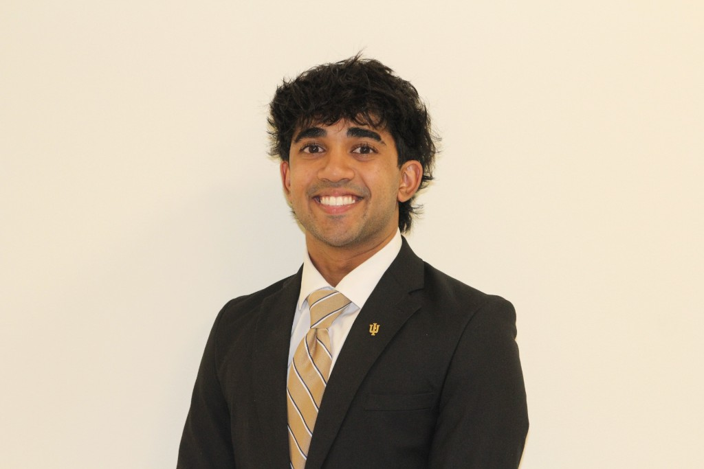

Custom Budgeting & Expense-Tracking Platform
Independently learned QuickBooks and built a platform at STEM School to streamline financial operations, expense tracking, and reporting for leadership.
See experience →Harman Saron
Sociable, versatile, and proactive—building a foundation in finance, operations, and leadership.

I’m a Finance major at Indiana University’s Kelley School of Business, set to graduate in 2029. I’m a Dean’s Scholar and member of the Jellison Living Learning Center, with hands-on experience in financial operations, compliance, and planning from internships and leadership roles.
I’m from Colorado and thrive in roles where I can combine analysis with clear communication—whether in client-facing meetings, budgeting and P&L review, or building tools to streamline operations. I’m always looking for the next opportunity to learn and contribute.
When I’m not in the books or in a spreadsheet, you’ll find me here.
 1989 BMW M3 E30
1989 BMW M3 E30
 Volleyball
Volleyball
 Football
Football
 Reading
Reading
 Polaroids
Polaroids
Financial Future Services, LLC
Generated and edited client profile statements, analyzed portfolios for accuracy and clarity, and sat in on 10+ financial planning meetings. Supported operations with Charles Schwab and weekly market reports for clients.
STEM School Highlands Ranch
Managed $20,000+ in cash flows, led P&L review meetings with the Head of Business, and built a custom budgeting/expense-tracking platform in QuickBooks to streamline financial operations and reporting.
DECA
Led the school-based enterprise to DECA Gold certification; managed a five-person team, raised $5,000+ through fundraisers, and oversaw chapter finances. Implemented cost-saving strategies that reduced per-student competition travel costs by 15%.
Independently learned QuickBooks and built a platform at STEM School to streamline financial operations, expense tracking, and reporting for leadership.
See experience →
Led a five-person team to produce a competition-ready business proposal and report; coordinated research, financial analysis, and writing over three months.
See experience →
As a House Leadership Council member, designed and executed student-driven programming for 500+ residents, with events drawing 40–50 attendees per semester.
See about →I’m open to internships, collaborations, and conversations about finance and leadership. Reach out anytime.